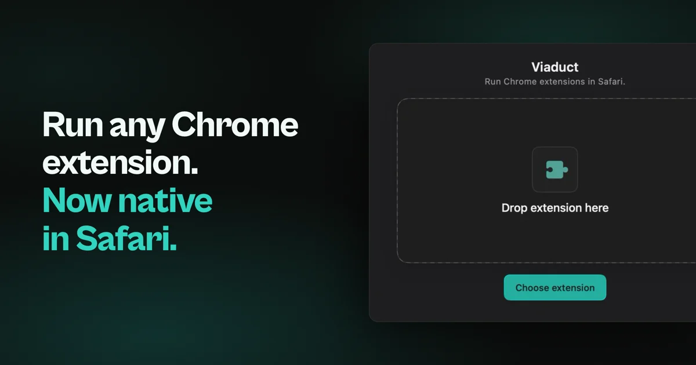

Two so far. Each one does a job macOS never got around to doing itself, and you pay for it once.
The shelf
Press Space on a .gdoc and read the document instead of the JSON sitting on disk.

Drop in a Chrome extension and get a signed Safari one back, without opening Xcode.